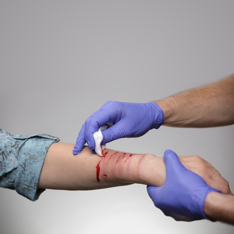

Accidents and Emergencies

How to stop bleeding
You should call emergency if
- Blood gushes out of the wound
- It can't be stopped
- You notice internal bleeding
- >Bleeding is severe
Ways of administering First Aid
Stop the Bleeding
-
Apply direct pressure on the cut or wound with a clean cloth,
tissue, or piece of gauze until bleeding stops.
-
If blood soaks through the material, don’t remove it. Put more cloth
or gauze on top of it and continue to apply pressure.
-
If the wound is on the arm or leg, raise limb above the heart, if
possible, to help slow bleeding.
-
Wash your hands again after giving first aid and before cleaning and
dressing the wound. Do not apply a tourniquet unless the bleeding is
severe and not stopped with direct pressure.
Clean Wound
-
Gently clean with soap and warm water. Try to rinse soap out of
wound to prevent irritation. Don’t use hydrogen peroxide or iodine,
which can damage tissue.
Protect the Wound
-
Apply antibiotic cream to reduce risk of infection and cover with a
sterile bandage. Also try to change the bandage daily to keep the
wound clean and dry.